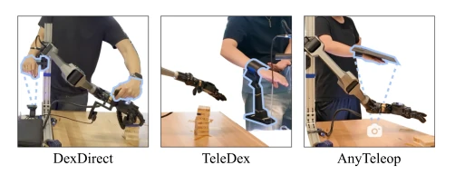
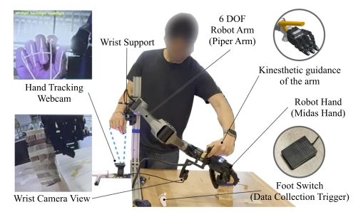
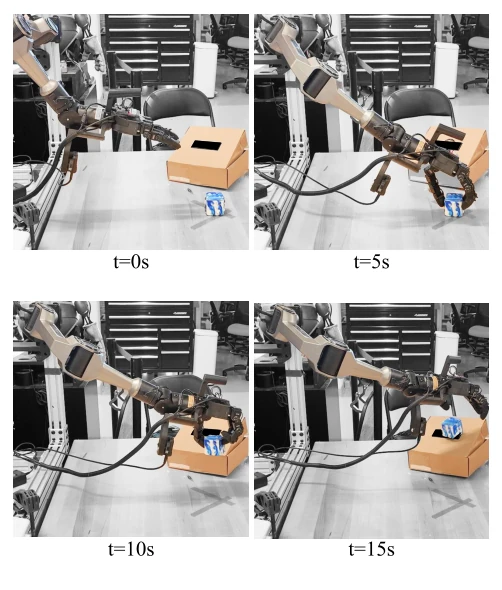
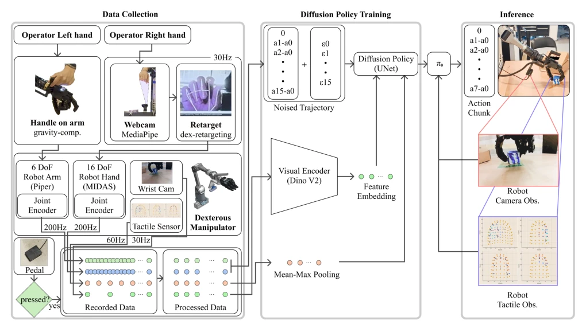

The DexDirect approach is quite interesting, offering a 'middle path' for dexterous manipulation data collection. It avoids expensive mechanical exoskeletons like DexEXO [9] and does not rely solely on camera-based estimation like AnyTeleop [10], but instead uses the left hand to directly manipulate the robotic arm while the right hand controls fingers via a camera. This strategy is indeed clever, decoupling the most challenging aspects of 'global localization' and 'fine manipulation'. However, a limitation is that this requires the operator to stand beside the robot and push; remote operation is not feasible due to physical constraints. Furthermore, although the cognitive load is reduced, physical exertion is not diminished, with physical demand actually rising in the NASA-TLX metrics. For teams aiming for large-scale remote data collection, this approach may be too 'local'. Nevertheless, the data efficiency is indeed high, 17 times that of the pure vision baseline, which is commendable.
Data collection for dexterous manipulation has long been a bottleneck in robot learning. Existing solutions are either too costly or too cumbersome. For instance, exoskeleton-type interfaces like DexEXO [9], while enabling force feedback, incur high hardware costs and require redesign for specific robots, limiting scalability. Another category involves pure vision or pose tracking, such as AnyTeleop [10] and TeleDex [12]; these offer low costs and rapid deployment but rely on monocular vision estimation, introducing latency, occlusion issues, and the cognitive burden of coordinate mapping. Operators must mentally map 2D actions observed by the camera into the robot's 6-DoF space while managing contact forces, a task too difficult for non-experts. Particularly for contact-rich tasks, pure vision struggles to ensure force control accuracy, resulting in low success rates. DexDirect seeks to address this contradiction: achieving both low setup costs and high-fidelity trajectory recording. It attempts to resolve arm control through physical guidance and finger control through vision, balancing the advantages and disadvantages of both to reduce the operator's cognitive load.

Fig. 4: Comparison of operator interfaces for dexterous teleop- eration. DexDirect combines direct physical guidance of the robot arm with vision-based hand retargeting, whereas TeleDex relies on a handheld control interface and AnyTeleop tracks the operator’s arm and hand motion entirely through vision.
The overall architecture is 'dual-arm decoupled control'. The robotic arm component employs direct force control (Kinesthetic Guidance), where the operator directly drags the gravity-compensated 6-DoF robotic arm (Agilex PIPER) via a handle on the wrist. The controller operates at 200Hz, canceling gravity through feedforward torque and zero position stiffness, giving the operator a sensation akin to pushing air. Trajectories are read directly from joint encoders, requiring no inverse kinematics or visual estimation, thereby eliminating coordinate mapping errors. The dexterous hand component adopts AnyTeleop's visual redirection framework, using a monocular camera (Logitech C270) to capture the operator's other hand, extracting 21 3D keypoints via MediaPipe, and optimizing the mapping to the 13 degrees of freedom of the MIDAS dexterous hand. A key design feature is that vision is responsible only for finger relative configuration, not global pose, since the arm has already established the global position, avoiding the uncertainty of monocular depth estimation. Regarding data recording, joint, tactile, and visual streams are synchronized via a monotonic clock and aligned to 30Hz during diffusion policy training. This hybrid design avoids coordinate mapping errors inherent to pure vision and finger operation difficulties of pure force control, achieving low-latency, high-fidelity data streams.

Fig. 1: DexDirect combines direct kinesthetic guidance of the robot arm with vision-based retargeting of the operator’s free hand. One hand guides the robot through a wrist-mounted handle, while the other commands the dexterous hand.
Experiments were conducted with 10 inexperienced participants, comparing DexDirect against TeleDex [12] and AnyTeleop [10]. The tasks covered 5 classes of contact tasks, including block stacking, USB removal, and whiteboard wiping. The results were robust: DexDirect collected 17.2 times the number of successful demonstrations compared to AnyTeleop and 3.2 times compared to TeleDex. Success rates were highest across all tasks, with AnyTeleop achieving even 0% success on whiteboard and keyboard tasks. NASA-TLX metrics indicated that DexDirect significantly reduced mental demand, effort, and frustration, though physical demand was slightly higher. Regarding downstream policy learning, diffusion policies trained on DexDirect data achieved a 90% success rate on cube grasp-and-place tasks. This demonstrates that although physically demanding, the data quality is high and collection is rapid, making it suitable for policy training.

Fig. 6: Representative policy rollouts. The learned policy grasps a cube from a randomized initial pose, lifts it, and places it onto the target box. Each sequence shows the rollout at t = {0, 5, 10, 15} s.
其他图片Other Figures

Fig. 2: System overview of DexDirect The operator directly guides the gravity-compensated robot arm while controlling the dexterous hand through vision-based hand-pose retargeting. The collected joint, visual, and tactile observations are synchronized and used to train a multimodal diffusion policy. At inference, the policy predicts robot action chunks conditioned on the current camera and tactile observations.